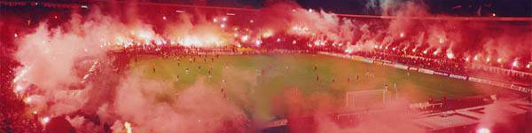
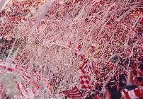
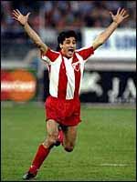
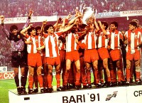

15 dugih godina
Te, 1991. godine nista nije bilo uobicajeno. Vazduh na prostoru nekadasnje Jugoslavije je bio naelektrisan vec godinama i masovna opijenost jeftinim nacionalizmom pocela je da kosta, u ljudskim zivotima. Ipak, svi su mislili da do najgoreg nece doci, da ce se duboka kriza jednostavno resiti samo od sebe. Ja sam bio druga godina srednje skole i dok je u zemlji kuvalo meni je u glavi bilo samo jedno ime, Zvezda! U stvari lazem, bilo je tu jos jedno ime, ali ne bih sada o tome.
Nije bilo lako pratiti Zvezdu te sezone. Sa 16, nije lako pratiti bilo sta. Obaveze u skoli su rasle sa ambicijama stroge razredne, eksponencijalno; novoosnovani bend, "Sarene Bundeve" zahtevao je predan rad (citaj sate besomucnog drndanja u potkrovlju kuce naseg bubnjara, u potrazi za savrsenim rifom), Valjevsko pivo je imalo dobru godinu, a buducnost ... ko je uopste mislio na buducnost? Lozili smo se na Pixies, Husker Du, Public Enemy... Moja kreativnost pri izmisljanju opravdanja za izostanke nije imala granice. Posto sam "posahranjivao" sve bake i deke, razrednoj sam poceo da pricam sve ludje i ludje price, dok me na kraju, za revans protiv Bajerna jednostavno mrzelo da izmisljam opravdanja. Sedam neopravdanih, 4 iz vladanja, i zagarantovano mesto ispred table u cetvrtak, ali sta je sve to naspram revans utakmice polufinala Kupa sampiona, Zvezda - Bajern.
Par nedelja ranije provalili smo da je nas nastavnik hemije peder, zato sto smo ga sa mog prozora videli na ulici, sa devojkom, za vreme tekme u Minhenu. Tada nam je to bilo jedino logicno objasnjenje, iako su se drzali za ruke. A utakmica, nikad ludja. Zvezda gazi veliki Bajern, u sred Minhena! Mislio sam da ce mi srce eksplodirati od uzbudjenja. Sledece nedelje mi je peder hemicar zab'o dvojku, jer jednostavno vise nisam mogao da razmisljam o skoli. Stariji brat koji je studirao u Beogradu je nabavio karte za revans protiv Bajerna, a dani su bili dugi i dosadni. Bend je napredovao dobro, ostalo je bilo manje vazno...
Ostavljam vasoj masti na volju da docara kako sam se osecao na stadionu kada je sve pocelo i kada se pred mojim ocima stadion bukvalno zapalio. Jezivo. 
A tek kada je Zvezda povela, golom Mihajlovica, koji je dosao u januaru te godine, mislio sam da je Zvezda vec u finalu. Neiskusno. Augentaler, Bender, 1:2. A onda, "Mihajlovic, Mihajlovic...nebo se otvorilo, stadion je eksplodirao...". Zvezda je u finalu, a ja u talasu na Marakani, zivot je sladak!
Eh, i onda dolazi na red taj 29.maj. Tih dana su se matorci "isprsili" za godinu dana u Americi, razmenu studenata koja me cekala u trecoj godini srednje skole. Nije bilo sanse da odem u Bari. I dan danas hocu da se pojedem sto nisam bio jedan od preko 20.000 crveno-belih na stadionu Sveti Nikola. A protivnik Olimpik Marsej, sve sa Piksijem. Dobro se secam koliko smo se pribojavali Piksija, bio je u jezivoj formi tada, mada ni Papen te sezone nije oprastao...
Utakmica tvrda, teska, Olimpik mozda i za nijansu bolji, ali prolaze minuti i utakmica se zavrsava. Produzeci, nista. Penali. To je to, svi znamo da je ovo jedina prilika koju cemo ikada imati. Dika na golu. I sve ide bas onako kako mora. Drama je kompletna, odlucujuci penal izvodi Pancev. Pancev, superstar sa juga bivse Jugoslavije... da li je mogao da promasi? Ne, u milion godina, iz milion pokusaja! I Zvezda je Sampion!

U junu smo imali par odlicnih svirki. U julu je cale naseg bubnjara mobilisan i poslat u Hrvatsku da "oslobadja". U avgustu sam otisao na godinu dana u Ameriku. SFRJ se raspala u uzasnom, krvavom ratu. Zvezda je u decembru u Tokiju postala prvak sveta. Sledecu sezonu Zvezda nije mogla da igra na Marakani. Srbijom se prosirio mrak. Mrak koji je ugusio sve. Ljubav, veru, nadu, zivot, sve.
Proslo je 15 godina od tada. 15 dugih godina. I kao sto se u dubini srca nadam da ce se Zvezdina zlatna sezona jednom ponoviti, razum mi govori da je to jednostavno nemoguce. Zadovoljan bih bio da se poslednjih 15 godina ne ponove. Nikad i nikom. A sto se Zvezde tice, jedna titula je dovoljna za jedan zivot, tako ja gledam na stvari. Hvala na lepim uspomenama, majstori!
Ja sam se najezila
La Lara | 29.05.06 11:40
mi smo utakmicu sa Bajernom gledali na maturskoj eksurziju, u jednoj pivnici u Budimpesti. I uspavanu srednjeevropsku postkomunisticku kafanu doveli do usijanja, zajedno sa stalnim gostima i razdraganim konobarima (zamisljajte kolicinu prodatog piva koju su mogli da popiju neiskusni i zeljni osamnaestogodisnjaci). Tada je izgledalo da nema granice nasoj superiornosti.
tekton | 29.05.06 13:45
Citam i jezim se. Evo na faxu kao "ucim" pa pravim pauzu i rekoh da vidim sta ima na netu. Dok sam citao jednostavno osmijeh sa lica mi nije sisao do samog kraja. Obukao sam duks jer mi je od toliko jeze postalo hladno!
Kao sto ti rece: Hvala majstori i dabogda se poslednjih 15 godina nikad i nikom ne ponovile!!!
DELIJA, BANJALUKA
mirko | 30.05.06 15:28
I ako nisam se bio ni rodi kada su ti momci osvojili nesto tako reci "neosvojivo" cuo sam mnogo prpricavanja o tom dogadjaju.Daj Boze da nam se pnovi ta 1991,mislim ne prokleti rat, nego taj nevjerovatan dogadjaj i dozivljaj!!!!Pozdrav za sve DELIJE!!!!!!!!
Zvezda mi je sve, Zvezda Zivot je,
Srce moje je uvek uz tebe Zvezdo volim te,
napred Zvezda le napred zvezda le...........
Delija do groba Zvornik RS | 25.01.07 17:52
 RSS feed
RSS feed
 sadržaji se objavljuju pod
sadržaji se objavljuju pod
Komentari
Coveche,ovo je jedan od najboljih tekstova koje sam procitao.
Slucajno sam naleteo na ovu stranu.I jednostavno sve dlake su mi se digle citajuci owaj tekst....
Ja verujem u Zvezdu da jednoga dana cu mozda biti mator ali cu mozda moci da prisustvujem takom nekom velikom trenutku!
Hwala ti.
Fisher | 28.10.07 22:05